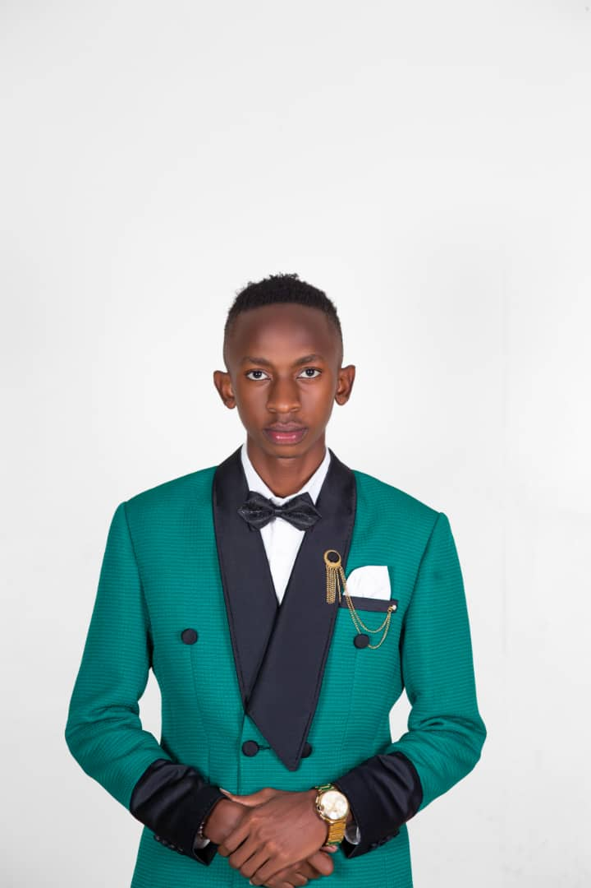

Profile Photo
 Conrad David is an undergraduate student at Makerere University.
He is pursuing Software Engineering at the school of Computing
He is a proud fan of football. He supports various teams. He is a politician. He loves reading books. He is a great Mathematician.
Some of his hobbies and interests can be seen by following the link below.
hobbies and interests| Institution | Years | Degree acquired in the process |
|---|---|---|
| Greenhill Academy | 2005-2009 | pre Primary certificate of completion |
| Kampala Parents School | 2009-2014 | primary Leaving Examinations certificate |
| Uganda Martyrs Secondary School Namugongo | 2015-2018 | Uganda Certificate of Education |
| Uganda Martyrs Secondary School Namugongo | 2019-2020 | Uganda Advanced Certificate of Eduation |
He is social and he actively uses different social platforms. These include;
One more thing. How did you here about me